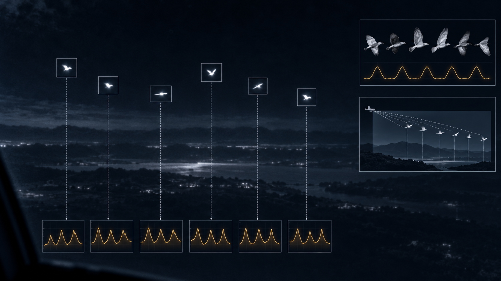
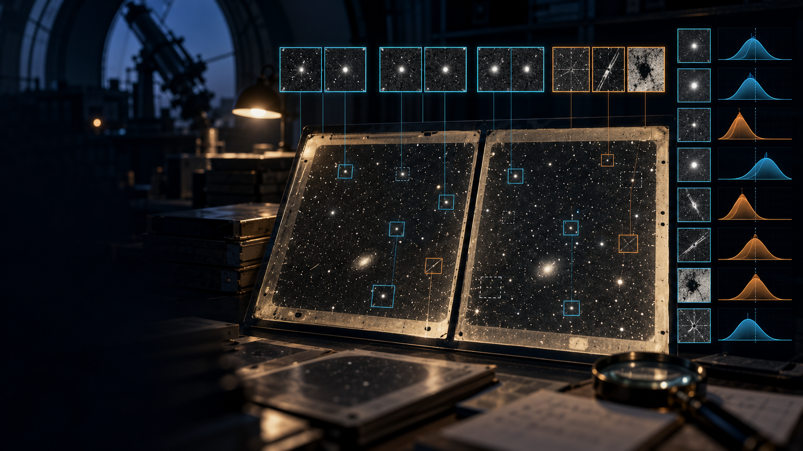

Original editorial illustration—not documentary footage.
Ross Coulthart interviews Mike Morgan and Liberty about November 2024 aerial reports near British military bases. Their statements and described records warrant further review; object identities remain unverified.
GSP Podcast / Georges St-Pierre · October 20, 2026 · Witness Testimony
Original GreyAlien editorial illustration; not documentary evidence.
Paul Trim describes his recollections of the 1994 Ariel School incident in a 2026 interview. His decades-later testimony is preserved as an attributed account and is not independent verification of an extraterrestrial event.
Stratton discusses footage he says he viewed near a nuclear missile silo and historical government investigations. His statements do not independently authenticate the alleged footage.
Sentinel News / Baptiste Friscourt · October 12, 2026 · Government Procedures / Attributed Classified-Directive Description
Editorial illustration—not an image of the classified directive. AI-generated for GreyAlien.
Peter Skafish described an alleged classified executive directive and multiple government reporting paths for UAP-related information, including potential ODNI and FBI referrals. The Sol Foundation said it does not accept classified disclosures.
Evidence status: The recorded discussion verifies Skafish’s statements. The directive itself is not public, and GreyAlien has not independently authenticated its text, scope or legal effect.
Sentinel News / Baptiste Friscourt · October 9, 2026 · Recorded Statement / Attributed Claims
Editorial illustration—not documentary imagery of the interview or alleged briefings. AI-generated for GreyAlien.
Robert F. Kennedy Jr. said in a recorded conversation with Representative Anna Paulina Luna that unnamed individuals approached him during the presidential transition to discuss UAP. He described extraordinary recovery-related claims attributed to that group and said he later received additional briefings after entering the administration.
Evidence status: The recording verifies that Kennedy made these statements. It does not independently verify the unnamed briefers, their credentials, alleged recovery operations, standing orders or recovered objects.
arXiv / Haqq-Misra et al. · October 6, 2026; revised October 7 · Scientific Preprint / Infrared Analysis

Scientific editorial illustration—not original PR135 imagery and not a definitive identification. AI-generated for GreyAlien.
Researchers measured independent 7.1–7.9 Hz brightness fluctuations in all six objects shown in DOW-UAP-PR135. Those frequencies overlap infrared measurements of flying animals recorded by the Galileo Project, while parallax modeling shows how nearby slow-moving objects could produce the reported projected speed.
Evidence status: The authors identify a small flock of birds as the best explanation. This remains a preprint interpretation rather than an official or conclusive identification, and unredacted telemetry could test or refute it.
The Black Vault / John Greenewald Jr. · October 5, 2026 · Government Records / FOIA
Editorial illustration of classified UAP and USO records in a secure archive. Not documentary imagery. AI-generated for GreyAlien.
AARO reported locating records responsive to a targeted FOIA request concerning five incident labels previously identified in a House records request. The agency withheld the responsive material in full under classification-related authority.
What this establishes: a defined records search produced responsive material and a classified-withholding determination. What it does not establish: that the incident descriptions are authenticated, that the objects were anomalous, or what the withheld records contain.
Paradigm / Ben Schreckinger · October 1, 2026 · Historical Confirmation / Competing Claims
Editorial illustration of the confirmed 2016 discussion. Not documentary imagery of the participants. AI-generated for GreyAlien.
John Podesta confirmed participating in a 2016 conference call arranged by Tom DeLonge with retired Air Force Maj. Gen. Neil McCasland and former Lockheed executive Robert Weiss. Podesta recalls discussion of declassifying Defense Department files and reducing professional stigma around taking UAP seriously.
Disputed interpretation: David Grusch characterized the interaction as an authorized public-acclimatization effort. Podesta rejected that characterization. Confirmation of the call does not independently establish that such a government program existed.
U.S. Department of War / PURSUE · September 18, 2026 · Government Records Release
Editorial illustration of a sixth government UAP file release. Not an original government record. AI-generated for GreyAlien.
The Department published the sixth PURSUE tranche of declassified and historical UAP files and said releases would continue on a rolling basis. The permanent GreyAlien record preserves the official collection, its dated manifest and its relationships to earlier government-records work.
Evidence discipline: Official custody, declassification and publication establish provenance and public availability—not the accuracy of every embedded claim or an extraordinary explanation for any media.
U.S. Department of War · September 14, 2026 · Government Policy / Protected Disclosure
Editorial illustration of a protected disclosure channel. Not documentary imagery. AI-generated for GreyAlien.
The Department announced a legal waiver allowing covered current and former personnel to provide UAP-related National Defense Information directly to designated PURSUE representatives without triggering specified civil or administrative enforcement provisions in applicable NDAs and Special Access Program Indoctrination Agreements.
Important limitation: This is a protected government reporting channel—not permission for unrestricted public disclosure. Submission to PURSUE does not automatically declassify information, guarantee public release or authenticate the underlying claim.
Universe Today / Brian Koberlein · September 9, 2026 · Space Science / Technosignature Methodology
Concept visualization of a hypothetical Slysh halo—not telescope imagery or a detected system. AI-generated GreyAlien editorial illustration.
Michael Garrett proposes that hypothetical distributed computers operating at very low temperatures in the outer regions of a planetary system could emit aggregated waste heat in far-infrared or submillimetre wavelengths. Existing survey archives may be able to test parts of this modeled parameter space.
Evidence status: The paper reports no Slysh halo or extraterrestrial technology detection. Cold dust, debris structures, background galaxies and instrumental effects can imitate parts of the proposed signature and require systematic exclusion.
Avi Loeb / Medium · September 8, 2026 · Space Science / Technosignature Methodology
Concept illustration of proposed lunar-regolith analysis—not a detected technosignature. AI-generated for GreyAlien.
Avi Loeb highlights a revised scientific preprint proposing that approximately one cubic metre of characterized lunar regolith could be screened for hypothetical microscopic technological material. The authors model whether refractory grains might survive interstellar transport and lunar impact and show how a carefully controlled null result could constrain specified high-output scenarios.
Evidence status: No extraterrestrial technological particle has been detected, and the modeled cubic-metre sample has not been collected or analyzed. Avi Loeb wrote the commentary but is not an author of the underlying preprint.
UAP Check / Philippe Ailleris · September 2, 2026 · Research / Reporting-Data Methodology
Data illustration of European reporting channels and uneven coverage; report counts do not measure underlying phenomenon frequency. AI-generated for GreyAlien.
The Version 1.0 European UAP Barometer combines national reporting data with European submissions to MUFON, NUFORC and Enigma Labs. It records 7,193 reports for 2025, but emphasizes that reporting infrastructure, app adoption, screening, publication practices and missing inputs can change the visible totals without demonstrating a change in the underlying frequency of unusual aerial observations.
Statistical caution: These are aggregated reporting-channel events—not 7,193 confirmed anomalous, independent, investigated or unexplained cases.
DefenseScoop / Brandi Vincent · September 2, 2026 · Government Records / Historical Archives
Editorial illustration of private historical records being digitized for authorized research access. AI-generated for GreyAlien.
AARO is moving toward a proposed sole-source subscription for digital access to pre-1990 historical UFO/UAP records held by the National UFO Historical Records Center. The archive could supply context missing from fragmented government repositories, but the action concerns access—not ownership of the physical collection—and does not authenticate every claim in the records.
Procurement status: The underlying government record is a notice of intent to award. GreyAlien has not independently verified a completed contract award as of September 3, 2026.
The Sol Foundation / Marik von Rennenkampff · August 2026 · Research / Policy Paper
GreyAlien original editorial illustration.
The Sol Foundation policy paper examines the civilizational and geopolitical risks that could follow if states were competing to exploit advanced technology of alleged nonhuman origin. It focuses on secrecy, deterrence, strategic instability and international control, treating a UAP technology arms race as a consequential policy scenario rather than evidence that any government actually possesses nonhuman technology.
International Business Times UK / Briane Nebria · August 28, 2026 · Research / Scientific Methodology
Scientific editorial illustration of archival-plate review—not an original plate or a verdict on the dispute. AI-generated for GreyAlien.
International Business Times reports on a peer-reviewed methodological critique of VASCO-related analyses of pre-Sputnik POSS1 photographic-plate features. The underlying PASA paper reports that the claimed nuclear-test timing correlation becomes statistically insignificant after normalization by relevant observation days and raises additional dataset-validation and artifact concerns; GreyAlien treats those results as a scientific challenge, not as a final resolution of the broader VASCO research dispute.
The UFO Chronicles / André Skondras · August 21, 2026
Official U.S. Department of State photo · public domain · cropped for GreyAlien.
In an August 11 interview published by the U.S. Department of State, Marco Rubio said unidentified objects have been observed over U.S. military installations, that he does not know what they are, and that the subject warrants serious investigation. He also said he had handed the UAP portfolio to Stephen Miller and rejected the idea that the current administration is concealing definitive evidence, while The UFO Chronicles uses those remarks to contrast Rubio’s current public tone with his earlier Senate-era UAP involvement.
Researchers Jacob Haqq-Misra and Ravi Kopparapu analyzed all 112 UAP videos released through the PURSUE program and found that many lack the range, viewing geometry, platform-motion and other sensor data needed to determine an object's true velocity reliably. Their arXiv preprint argues that unexplained imagery should not be treated as evidence of extraordinary performance when key measurements are unavailable, and points to multi-sensor approaches as a stronger path for future UAP research.
Liberation Times / Christopher Sharp · August 19, 2026
GreyAlien original editorial illustration.
Liberation Times reports that UAP disclosure advocates are intensifying efforts to secure action from the Trump administration, including legal assurances for current and former officials who say they possess relevant information. The article also attributes claims about extraordinary UAP performance data and alleged legacy programs to unnamed or advocacy-linked sources; those assertions remain unverified and are presented here as reported claims rather than established facts.
A survey of hundreds of astrobiologists found that recent possible signs of extraterrestrial life on K2-18b and Mars have not produced scientific consensus that life has been discovered. The results highlight how researchers weigh uncertain biosignatures, alternative non-biological explanations, and the strength of evidence required before making an extraordinary conclusion.
Scientific Reports / Bruehl et al. · August 10, 2026 · Peer-Reviewed Research / Machine Learning

Scientific editorial illustration—not an original POSS-I plate or evidence of a technosignature. AI-generated for GreyAlien.
The authors trained a classifier on 250 expert-reviewed image pairs and applied it to 107,875 transient candidates. They report that debated nuclear-window and Earth-shadow patterns persist after probability-based artifact control.
Evidence status: The peer-reviewed study supports further investigation of an unrecognized transient population. It does not determine the candidates’ physical origin or establish artificial or extraterrestrial technology.